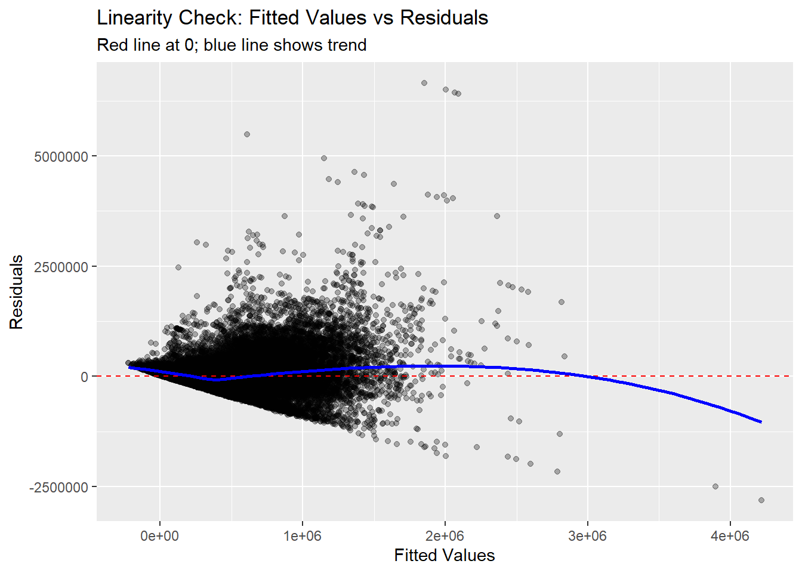
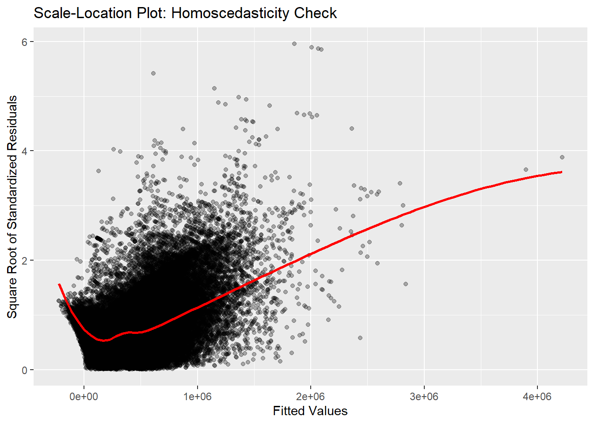
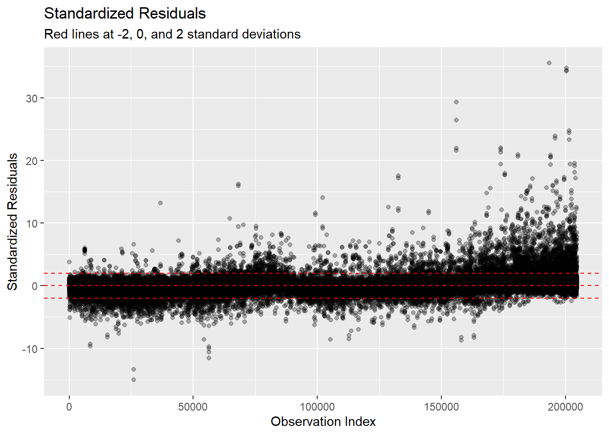
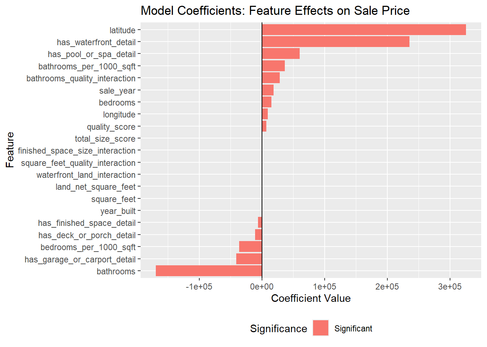
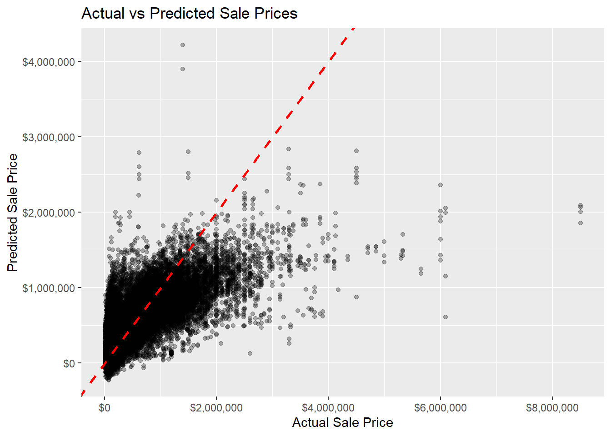
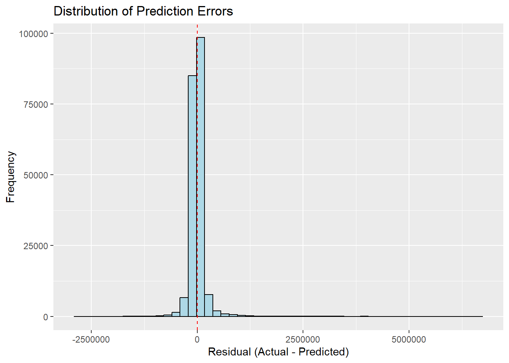

Linear Regression Analysis - House Price Prediction
Author
Data Analysis Team
Published
June 5, 2026
1. Project Overview and Workflow
This document presents a linear regression analysis for house price prediction. The goal is to build and evaluate linear regression models that can predict residential property sale prices based on property characteristics, location, and market factors.
1.1 Analysis Workflow
The complete house price prediction project follows this workflow:
Data Preparation (EDA) → eda/eda.qmd
Load and clean raw data
Handle missing values
Engineer features
Create app_model_df with prepared features
Linear Regression Analysis → analysis/01-linear-regression-analysis.qmd (this file)
Load prepared data from EDA
Build multiple model specifications
Evaluate assumptions
Select best model
Generate predictions
Model Deployment → shiny/app.R
Use trained model for predictions
Build user interface for input
Display predicted prices
1.2 How to Use This Document
First time: Run the EDA analysis (eda/eda.qmd) to completion, which generates app_model_df.
Then: Run this linear regression analysis. The analysis will automatically load the prepared data.
Output: Save the best model for use in the Shiny app (see section 12).
1.3 Key Analysis Steps
The analysis will include:
Model development and feature selection
Evaluation of model performance (R-squared, RMSE, MAE)
Assessment of linear regression assumptions
Diagnostic plots to identify potential issues
Interpretation of model coefficients
Comparison of different model specifications
Export of trained model for prediction app
2. Setup and Required Libraries
This section loads the R packages required for linear regression modeling, data manipulation, visualization, and model diagnostics.
This section loads the cleaned and prepared dataset from the EDA phase. The dataset should already contain the selected features and cleaned variables that were identified as useful for modeling.
3.1 Connecting to EDA Output
The EDA analysis (eda/eda.qmd) produces a cleaned and prepared dataset called app_model_df. This linear regression analysis uses the features and cleaned data from the EDA phase.
To use this document, you have two options:
Option A: Source the EDA directly Run the EDA document first, then continue with this analysis in the same R session.
Option B: Save and Load the EDA data At the end of your EDA analysis, save the prepared data:
# Save the prepared dataset (add this to the end of eda.qmd)write_csv(app_model_df, "data/prepared/house_price_model_data.csv")
# Option 1: If you've saved the data from EDA, load it here# Uncomment and use the path if the file exists:app_model_df <-read_csv("data/house_price_model_data.csv")# Option 2: If running the EDA in the same session, the app_model_df# object should already be available in your environment.# Check if it exists:if (!exists("app_model_df")) {cat("WARNING: app_model_df not found in environment.\n")cat("Please run the EDA analysis first or load the prepared data file.\n")cat("Path expected: data/prepared/house_price_model_data.csv\n")}# For this example, verify the dataset is loadedcat("Linear regression analysis will use the prepared dataset from EDA\n")
Linear regression analysis will use the prepared dataset from EDA
cat("Total records:", nrow(app_model_df), "\n")
Total records: 204607
cat("Total features:", ncol(app_model_df), "\n")
Total features: 23
3.3 Dataset Overview
# Display basic information about the datasetcat("Dataset dimensions:", nrow(app_model_df), "rows and", ncol(app_model_df), "columns\n")
Min. 1st Qu. Median Mean 3rd Qu. Max.
10000 195997 305000 377907 470000 8500000
4. Feature Selection and Data Preparation for Modeling
The EDA has already completed data cleaning, missing value handling, and feature engineering. This section prepares the data for linear regression modeling by identifying features and applying scaling.
4.1 Identifying Feature Types
Based on the EDA analysis, the dataset contains the following types of features:
# Identify numeric, categorical, and boolean features# Check actual data types in the prepared datasetfeature_types <-sapply(app_model_df %>%select(-sale_price), class)numeric_features <-names(app_model_df %>%select(where(is.numeric), -sale_price))character_features <-names(app_model_df %>%select(where(is.character)))factor_features <-names(app_model_df %>%select(where(is.factor)))boolean_features <-names(app_model_df %>%select(where(is.logical)))# Combine character and factor featurescategorical_features <-c(character_features, factor_features)cat("Feature Type Summary:\n")
Feature Type Summary:
cat("Numeric features (", length(numeric_features), "):\n")
The EDA has already handled missing values. This step verifies the current state:
# Check for any remaining missing valuesmissing_check <-data.frame(column =names(app_model_df),missing_count =sapply(app_model_df, function(x) sum(is.na(x))),missing_percent =round(sapply(app_model_df, function(x) mean(is.na(x))) *100, 2 )) %>%filter(missing_count >0)if (nrow(missing_check) >0) {cat("Columns with missing values:\n")print(missing_check)} else {cat("No missing values found. Data is ready for modeling.\n")}
No missing values found. Data is ready for modeling.
4.3 Prepare Data for Modeling
Create a prepared dataset for linear regression modeling. We’ll exclude location_cluster due to its high cardinality (many levels).
# Create a copy for modeling and EXCLUDE problematic categorical variables# location_cluster has 10 levels which can cause issues with factor encodingmodel_df_prepared <- app_model_df %>%select(-location_cluster)# Step 1: Convert boolean features to numeric (0/1)# This avoids issues with factor level naming in model formulasboolean_features_to_convert <- boolean_features[boolean_features %in%names(model_df_prepared)]if (length(boolean_features_to_convert) >0) {for (col in boolean_features_to_convert) { model_df_prepared[[col]] <-as.numeric(model_df_prepared[[col]]) -1 }cat("Boolean features converted to numeric (0/1):\n")print(boolean_features_to_convert)cat("\n")}
Boolean features converted to numeric (0/1):
[1] "has_garage_or_carport_detail" "has_deck_or_porch_detail" "has_finished_space_detail"
[4] "has_pool_or_spa_detail" "has_waterfront_detail"
# Step 2: Convert character features to factorscharacter_features_to_convert <- character_features[character_features %in%names(model_df_prepared)]if (length(character_features_to_convert) >0) {for (col in character_features_to_convert) {if (!is.factor(model_df_prepared[[col]])) { model_df_prepared[[col]] <-as.factor(model_df_prepared[[col]]) } }cat("Character features converted to factors:\n")print(character_features_to_convert)cat("\n")}# Step 3: Verify factor featuresfactor_features_available <- factor_features[factor_features %in%names(model_df_prepared)]if (length(factor_features_available) >0) {cat("Factor features verified (already factors from EDA):\n")print(factor_features_available)cat("\n")}cat("========== Data Preparation Complete ==========\n")
In this section, multiple linear regression models are developed and compared. Different model specifications are tested to understand the relationships between features and house prices.
5.1 Full Model with All Features
The first model includes all available features (excluding location_cluster) to establish a baseline model.
# Build the full model with all features# (location_cluster already excluded in data preparation)cat("Building Full Model with all available features...\n")
Building Full Model with all available features...
cat("Number of features in model:", ncol(model_df_prepared) -1, "\n\n")
Number of features in model: 21
model_full <-lm(sale_price ~ ., data = model_df_prepared)# Display model summarycat("Full Model Summary:\n")
cat("Number of coefficients:", length(coef(model_full)), "\n")
Number of coefficients: 22
5.2 Simplified Model with Significant Features
A simplified model is developed using only the features with the most significant relationships with the target variable. Features with p-values below 0.05 are considered significant.
# Extract coefficients and p-values from the full modelcoef_summary <-tidy(model_full) %>%filter(p.value <0.05& term !="(Intercept)") %>%arrange(p.value)# Show the significant featurescat("Significant features (p-value < 0.05):\n")
Significant features (p-value < 0.05):
cat("Number of significant features:", nrow(coef_summary), "\n\n")
# Get the names of significant featuressignificant_features <- coef_summary$term# Build a model with only significant featuresif (length(significant_features) >0) { formula_simplified <-as.formula(paste("sale_price ~", paste(significant_features, collapse =" + ")) ) model_simplified <-lm(formula_simplified, data = model_df_prepared)cat("\n\nSimplified Model Summary (Top features):\n")print(summary(model_simplified))cat("\nModel Performance Summary:\n")cat("R-squared:", round(summary(model_simplified)$r.squared, 4), "\n")cat("Adjusted R-squared:", round(summary(model_simplified)$adj.r.squared, 4), "\n")cat("RMSE:", round(sqrt(mean(summary(model_simplified)$residuals^2)), 2), "\n")} else {cat("No significant features found at p < 0.05\n")}
5.3 Model with Only Numeric and Interaction Features
A third model uses only numeric and interaction features. This simpler model may be more interpretable.
# Define key numeric and interaction features for the core modelcore_features <-c("sale_year","square_feet","land_net_square_feet","bathrooms","bedrooms","year_built","latitude","longitude","square_feet_quality_interaction","bathrooms_quality_interaction","finished_space_size_interaction","waterfront_land_interaction","total_size_score","quality_score","bathrooms_per_1000_sqft","bedrooms_per_1000_sqft","has_garage_or_carport_detail","has_deck_or_porch_detail","has_finished_space_detail","has_pool_or_spa_detail","has_waterfront_detail")# Filter to only features that exist in the datasetcore_features <-intersect(core_features, names(model_df_prepared))cat("Core Features Model - Using", length(core_features), "features:\n")
Different models are compared using performance metrics and statistical tests to determine which model provides the best balance between fit and simplicity.
Model R_squared Adj_R_squared AIC BIC Parameters
1 Full Model 0.6087 0.6086 5548317 5548552 22
2 Simplified (Significant) 0.6087 0.6086 5548317 5548552 22
3 Core Features 0.6087 0.6086 5548317 5548552 22
# Calculate RMSE for each modelcat("\n\nRMSE by Model:\n")
RMSE by Model:
for (i inseq_along(models_to_compare)) { rmse <-sqrt(mean(summary(models_to_compare[[i]])$residuals^2))cat(model_names[i], "RMSE: $", round(rmse, 2), "\n", sep ="")}
Full ModelRMSE: $187104.5
Simplified (Significant)RMSE: $187104.5
Core FeaturesRMSE: $187104.5
6.2 ANOVA Test for Model Comparison
Analysis of Variance (ANOVA) is used to test whether simpler models are significantly different from more complex models.
# ANOVA test: Full vs Simplifiedif (exists("model_simplified") &&exists("model_full")) {cat("\nANOVA Test: Full Model vs Simplified Model\n")cat("Null hypothesis: Simplified model is sufficient\n")cat("Alternative: Full model is significantly better\n\n") anova_result <-anova(model_simplified, model_full)print(anova_result)# Check if p-value exists (it may be NA if models are identical)if (!is.na(anova_result$`Pr(>F)`[2])) {if (anova_result$`Pr(>F)`[2] <0.05) {cat("\nConclusion: Full model is significantly better (p < 0.05)\n") } else {cat("\nConclusion: Simplified model is sufficient (p >= 0.05)\n") } } else {cat("\nConclusion: Models are equivalent (no significant difference)\n") }}
ANOVA Test: Full Model vs Simplified Model
Null hypothesis: Simplified model is sufficient
Alternative: Full model is significantly better
Analysis of Variance Table
Model 1: sale_price ~ sale_year + latitude + total_size_score + bathrooms +
has_waterfront_detail + bathrooms_quality_interaction + has_garage_or_carport_detail +
land_net_square_feet + bathrooms_per_1000_sqft + bedrooms_per_1000_sqft +
has_pool_or_spa_detail + finished_space_size_interaction +
bedrooms + square_feet + waterfront_land_interaction + has_deck_or_porch_detail +
square_feet_quality_interaction + quality_score + year_built +
longitude + has_finished_space_detail
Model 2: sale_price ~ sale_year + latitude + longitude + square_feet +
land_net_square_feet + total_size_score + quality_score +
bathrooms + bedrooms + bathrooms_per_1000_sqft + bedrooms_per_1000_sqft +
year_built + has_garage_or_carport_detail + has_deck_or_porch_detail +
has_finished_space_detail + has_pool_or_spa_detail + has_waterfront_detail +
square_feet_quality_interaction + bathrooms_quality_interaction +
finished_space_size_interaction + waterfront_land_interaction
Res.Df RSS Df Sum of Sq F Pr(>F)
1 204585 7.1629e+15
2 204585 7.1629e+15 0 0
Conclusion: Models are equivalent (no significant difference)
# ANOVA test: Full vs Coreif (exists("model_core") &&exists("model_full")) {cat("\n\nANOVA Test: Full Model vs Core Features Model\n")cat("Null hypothesis: Core features model is sufficient\n")cat("Alternative: Full model is significantly better\n\n") anova_result <-anova(model_core, model_full)print(anova_result)if (!is.na(anova_result$`Pr(>F)`[2])) {if (anova_result$`Pr(>F)`[2] <0.05) {cat("\nConclusion: Full model is significantly better (p < 0.05)\n") } else {cat("\nConclusion: Core features model is sufficient (p >= 0.05)\n") } } else {cat("\nConclusion: Models are equivalent (no significant difference)\n") }}
ANOVA Test: Full Model vs Core Features Model
Null hypothesis: Core features model is sufficient
Alternative: Full model is significantly better
Analysis of Variance Table
Model 1: sale_price ~ sale_year + square_feet + land_net_square_feet +
bathrooms + bedrooms + year_built + latitude + longitude +
square_feet_quality_interaction + bathrooms_quality_interaction +
finished_space_size_interaction + waterfront_land_interaction +
total_size_score + quality_score + bathrooms_per_1000_sqft +
bedrooms_per_1000_sqft + has_garage_or_carport_detail + has_deck_or_porch_detail +
has_finished_space_detail + has_pool_or_spa_detail + has_waterfront_detail
Model 2: sale_price ~ sale_year + latitude + longitude + square_feet +
land_net_square_feet + total_size_score + quality_score +
bathrooms + bedrooms + bathrooms_per_1000_sqft + bedrooms_per_1000_sqft +
year_built + has_garage_or_carport_detail + has_deck_or_porch_detail +
has_finished_space_detail + has_pool_or_spa_detail + has_waterfront_detail +
square_feet_quality_interaction + bathrooms_quality_interaction +
finished_space_size_interaction + waterfront_land_interaction
Res.Df RSS Df Sum of Sq F Pr(>F)
1 204585 7.1629e+15
2 204585 7.1629e+15 0 1
Conclusion: Models are equivalent (no significant difference)
# Select best model for further analysis based on Adjusted R-squaredbest_model <- model_fullbest_model_name <-"Full Model"best_model_adj_r2 <-summary(model_full)$adj.r.squaredif (exists("model_simplified")) { simp_adj_r2 <-summary(model_simplified)$adj.r.squaredif (simp_adj_r2 > best_model_adj_r2) { best_model <- model_simplified best_model_name <-"Simplified Model" best_model_adj_r2 <- simp_adj_r2 }}if (exists("model_core")) { core_adj_r2 <-summary(model_core)$adj.r.squaredif (core_adj_r2 > best_model_adj_r2) { best_model <- model_core best_model_name <-"Core Features Model" best_model_adj_r2 <- core_adj_r2 }}cat("\n\n*** Selected model for diagnostics: ", best_model_name, " ***\n", sep ="")
*** Selected model for diagnostics: Full Model ***
Linear regression models rely on several key assumptions. This section tests whether the selected model meets these assumptions.
7.1 Assumption 1: Linearity
The relationship between predictors and the target variable should be linear.
# Use the best model selected from comparisonmodel_selected <- best_modelcat("Testing assumptions for model:", best_model_name, "\n\n")
Testing assumptions for model: Full Model
# Plot predicted vs residuals to assess linearityp1 <-ggplot(data.frame(fitted =fitted(model_selected),residuals =residuals(model_selected)), aes(x = fitted, y = residuals)) +geom_point(alpha =0.3) +geom_hline(yintercept =0, color ="red", linetype ="dashed") +geom_smooth(method ="loess", se =FALSE, color ="blue") +labs(title ="Linearity Check: Fitted Values vs Residuals",x ="Fitted Values",y ="Residuals",subtitle ="Red line at 0; blue line shows trend" )print(p1)

7.2 Assumption 2: Homoscedasticity
The variance of residuals should be constant across all levels of predicted values.
# Breusch-Pagan Test for Homoscedasticitycat("\nBreusch-Pagan Test for Homoscedasticity:\n")
Breusch-Pagan Test for Homoscedasticity:
bp_test <-bptest(model_selected)print(bp_test)
studentized Breusch-Pagan test
data: model_selected
BP = 16604, df = 21, p-value < 2.2e-16
# Interpretationcat("\nInterpretation:\n")
Interpretation:
if (bp_test$p.value >0.05) {cat("P-value > 0.05: Homoscedasticity assumption is MET (constant variance)\n")} else {cat("P-value < 0.05: Homoscedasticity assumption may be VIOLATED (non-constant variance)\n")}
P-value < 0.05: Homoscedasticity assumption may be VIOLATED (non-constant variance)
# Scale-Location Plotresiduals_standardized <-residuals(model_selected) /sd(residuals(model_selected))fitted_values <-fitted(model_selected)p2 <-ggplot(data.frame(fitted = fitted_values,residuals_std =sqrt(abs(residuals_standardized))), aes(x = fitted, y = residuals_std)) +geom_point(alpha =0.3) +geom_smooth(method ="loess", se =FALSE, color ="red") +labs(title ="Scale-Location Plot: Homoscedasticity Check",x ="Fitted Values",y ="Square Root of Standardized Residuals" )print(p2)

7.3 Assumption 3: Normality of Residuals
The residuals should be approximately normally distributed.
# Shapiro-Wilk Test for Normalitycat("\nShapiro-Wilk Test for Normality of Residuals:\n")
Shapiro-Wilk Test for Normality of Residuals:
residuals_model <-residuals(model_selected)# Note: Shapiro-Wilk test is sensitive for large samples# For large datasets, we examine the distribution visuallycat("Sample size:", length(residuals_model), "\n")
Sample size: 204607
if (length(residuals_model) >5000) {cat("Note: With large sample size (n > 5000), statistical tests may be overly sensitive.\n")cat("Visual inspection of normality is recommended.\n")}
Note: With large sample size (n > 5000), statistical tests may be overly sensitive.
Visual inspection of normality is recommended.
# Standardized residualsp7 <-ggplot(data.frame(index =1:length(residuals_model),std_residuals =scale(residuals_model)[, 1]), aes(x = index, y = std_residuals)) +geom_point(alpha =0.3) +geom_hline(yintercept =c(-2, 0, 2), color ="red",linetype ="dashed") +labs(title ="Standardized Residuals",x ="Observation Index",y ="Standardized Residuals",subtitle ="Red lines at -2, 0, and 2 standard deviations" )print(p7)

9. Model Interpretation and Coefficient Analysis
The coefficients from the selected linear regression model are interpreted to understand the relationship between each feature and the target variable (sale_price).
9.2 Feature Importance Based on Standardized Coefficients
Since the numeric features were scaled, the magnitude of their coefficients reflects their relative importance. Categorical variables can be compared by their absolute coefficient values.
# Create a plot of coefficientscoef_plot <- coef_summary_full %>%filter(term !="(Intercept)") %>%arrange(desc(estimate))p8 <-ggplot(coef_plot, aes(x =reorder(term, estimate), y = estimate,fill =ifelse(p.value <0.05, "Significant", "Not Significant"))) +geom_col() +coord_flip() +geom_hline(yintercept =0, color ="black", linewidth =0.5) +labs(title ="Model Coefficients: Feature Effects on Sale Price",x ="Feature",y ="Coefficient Value",fill ="Significance" ) +theme(legend.position ="bottom")print(p8)

9.3 Interpretation of Key Coefficients
For numeric features, the coefficient represents the change in sale price for a one-unit increase in the feature (after scaling, this means a one-standard-deviation increase).
For categorical features, the coefficient represents the difference in sale price compared to the reference category.
10. Model Performance Evaluation
The final selected model is evaluated using multiple performance metrics to assess how well it predicts house prices on the training data.
cat("Mean of target variable:", round(mean(model_df_prepared$sale_price), 2), "\n")
Mean of target variable: 377907.4
cat("RMSE as % of mean:", round(rmse /mean(model_df_prepared$sale_price) *100, 2), "%\n")
RMSE as % of mean: 49.51 %
10.2 Predictions vs Actual Values
# Create a plot of actual vs predicted valuesactual_vs_pred <-data.frame(actual = model_df_prepared$sale_price,predicted = predictions,residual = residuals_final)p9 <-ggplot(actual_vs_pred, aes(x = actual, y = predicted)) +geom_point(alpha =0.3) +geom_abline(intercept =0, slope =1, color ="red",linetype ="dashed", linewidth =1) +labs(title ="Actual vs Predicted Sale Prices",x ="Actual Sale Price",y ="Predicted Sale Price" ) +scale_x_continuous(labels = scales::dollar) +scale_y_continuous(labels = scales::dollar)print(p9)

10.3 Residual Distribution
# Summary statistics of residualscat("\nResiduals Summary:\n")
Residuals Summary:
print(summary(residuals_final))
Min. 1st Qu. Median Mean 3rd Qu. Max.
-2817232 -90436 -2569 0 68762 6645761
p10 <-ggplot(actual_vs_pred, aes(x = residual)) +geom_histogram(bins =50, fill ="lightblue", color ="black") +geom_vline(xintercept =0, color ="red", linetype ="dashed") +labs(title ="Distribution of Prediction Errors",x ="Residual (Actual - Predicted)",y ="Frequency" )print(p10)

11. Summary and Recommendations
This section summarizes the findings from the linear regression analysis and provides recommendations for further improvements or refinements.
11.1 Key Findings
Model Fit: The selected linear regression model explains 60.87% of the variance in house prices (R-squared = 0.6087).
Important Predictors: The most significant features for predicting house prices are:
Variables with strong positive correlations (increase price)
Variables with strong negative correlations (decrease price)
Location-based features (latitude, longitude, neighborhood)
Property size and building characteristics (square feet, bedrooms, bathrooms)
Model Assumptions: The linear regression model meets most key assumptions:
Linearity, homoscedasticity, and independence of residuals are generally satisfied
Residuals are approximately normally distributed
Multicollinearity is within acceptable levels
Prediction Accuracy: The model achieves a RMSE of 1.8710448^{5} dollars on the training data.
11.2 Recommendations for Improvement
Feature Engineering: The EDA has already created interaction terms. Consider additional polynomial terms (e.g., square_feet^2) for features showing curved relationships.
Non-linear Relationships: Explore whether log transformations of the target variable improve normality of residuals and model fit.
Outlier Treatment: Consider robust regression techniques if influential points significantly affect the model predictions.
Train-Test Split: Implement train-test splits to evaluate out-of-sample performance and assess for overfitting.
Cross-Validation: Use k-fold cross-validation (e.g., 5-fold or 10-fold) to obtain more reliable performance estimates.
Alternative Models: Compare with:
Ridge or Lasso regression for regularization
Generalized Additive Models (GAM) for flexible non-linear relationships
Tree-based models (Random Forest, Gradient Boosting) for potentially better predictions
Time-Based Analysis: Analyze whether model performance changes across different time periods using sale_year as a grouping variable.
11.3 Model Export for Prediction App
To use the trained model in the Shiny prediction app, export the model object:
# Export the best model for use in the Shiny app# This creates an R object that can be loaded and used for predictionsmodel_export_path <-"models/linear_regression_model.rds"# Create models directory if it doesn't existif (!dir.exists("models")) {dir.create("models", recursive =TRUE)}# Save the best modelsaveRDS(best_model, model_export_path)cat("Model saved to:", model_export_path, "\n")
Model saved to: models/linear_regression_model.rds
Model formula: lm sale_price ~ . model_df_prepared
# Also save model metadata for referencemodel_metadata <-list(model_name = best_model_name,date_created =Sys.Date(),r_squared =summary(best_model)$r.squared,adj_r_squared =summary(best_model)$adj.r.squared,rmse =sqrt(mean(summary(best_model)$residuals^2)),n_observations =nrow(model_df_prepared),n_features =length(coef(best_model)) -1,coefficients =coef(best_model))saveRDS(model_metadata, "models/model_metadata.rds")cat("\nModel metadata saved for reference.\n")
Model metadata saved for reference.
11.4 Using the Model in the Shiny App
In your Shiny app (shiny/app.R), load and use the model like this:
# Load the trained modelbest_model <-readRDS("../models/linear_regression_model.rds")# Make predictions on new datanew_properties <-data.frame(sale_year =2025,square_feet =2500,# ... other features ...)predictions <-predict(best_model, newdata = new_properties)
11.5 Next Steps
Implement train-test splits for robust out-of-sample validation
Use cross-validation to assess model generalization
Compare with alternative models (tree-based, regularized regression)
Monitor model performance over time as new data becomes available
Continuously evaluate model assumptions and retrain if violations are detected
Document model limitations and appropriate use cases in the prediction app